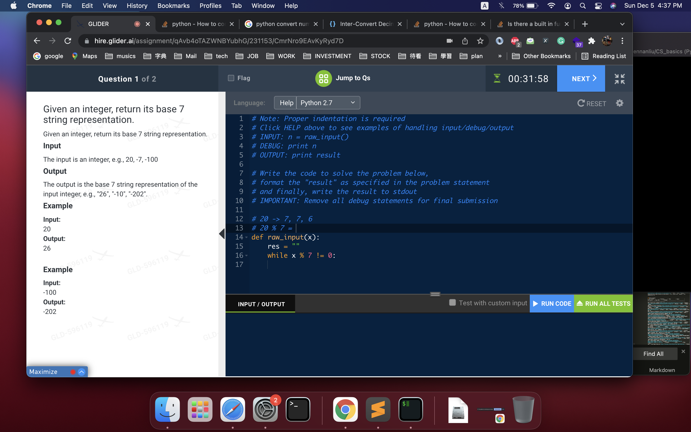

Math
Scope — Numeric manipulation in interviews — digit extraction, overflow-safe arithmetic, base conversion, roots, and pow. Formula-level counting lives next door. See also: combinatorics_math_patterns.md — counting, primes, modular arithmetic, geometry; bit_manipulation.md — the bit-level view; add_x_sum.md — addition across input shapes.
LeetCode Problem Lists
1) General form
1-1) Basic OP
1-1-0) transform 10 based interger to N based
- to 4 base
- to 7 base …

```python # python # 504. Base 7V0
IDEA : MATH : 10 based -> 7 based
“”"
NOTE :
1) for negative num : transform to positive int first, do 10 based -> 7 based op
then add "-" at beginning
2) for positive num : do 10 based -> 7 based op
-> keep checking if num % N == 0
-> if not == 0, keep do num = num % N, and append cur result to res
-> reverse res
-> make array to string
-> return result
3) example:
100 (10 based) -> "202" (7 based)
tmp = 100
a, b = divmod(tmp, 7) -> a = 14, b = 2, tmp = 14
a, b = divmod(tmp, 7) -> a= 2, b = 0, tmp = 2
a, b = divmod(tmp, 7) -> a = 0, b = 2
-> so res = [2,0,2]
“”"
V1
class Solution(object): def convertToBase7(self, num): # edge case if num == 0: return ‘0’ tmp = abs(num) res = [] while tmp > 0: a, b = divmod(tmp, 7) res.append(str(b)) tmp = a res = res[::-1] _res = “”.join(res) if num > 0: return _res else: return “-” + _res
test
#----------------
exmaple :
7 base
20 -> 26
-100 -> -202
#---------------- num = 20 # 26 num = -100 # -202 s = Solution() r = s.convertToBase7(num) print ®
V2
https://www.itread01.com/content/1544603062.html
https://kknews.cc/code/jlv38qp.html
class Solution(object): def convertToBase7(self, num): # edge case if num == 0: return ‘0’ tmp = abs(num) res = [] while tmp: i = tmp % 7 res.append(str(i)) tmp = tmp // 7 res = res[::-1] _res = “”.join(res) if num > 0: return _res else: return “-” + _res
#### 1-1-0') transform `N based integer to 10 based`
```python
# V1
# LC 1022. Sum of Root To Leaf Binary Numbers
def convertToBaseN(num, n):
return int(str(num), n)
In [34]: int("100",7)
Out[34]: 49
In [35]: int("14",7)
Out[35]: 11
In [36]: int("66",7)
Out[36]: 48
1-1-1) check prime number
# LC 762 Prime Number of Set Bits in Binary Representation
def check_prime(x):
if x <= 1:
return False
for i in range(2, int(x**(0.5)+1)):
if x % i == 0:
return False
return True
1-1-2) count prime number
# LC 204 Count Primes
# V0
# IDEA : set
# https://leetcode.com/problems/count-primes/discuss/1343795/python%3A-sieve-of-eretosthenes
# prime(x) : number of prime in [0, x]
# prime(0) = 0
# prime(1) = 0
# prime(2) = 0
# prime(3) = 1
# prime(4) = 2
# prime(5) = 3
class Solution:
def countPrimes(self, n):
# using sieve of eretosthenes algorithm
if n < 2: return 0
nonprimes = set()
for i in range(2, round(n**(1/2))+1):
if i not in nonprimes:
for j in range(i*i, n, i):
nonprimes.add(j)
return n - len(nonprimes) - 2 # remove prime(1), prime(2)
// java
// algorithm book (labu) p.362
// V1
int countPrimes(int n){
boolean[] isPrime = new boolean[n];
// init array to true
Arrays.fill(isPrime, true);
// prime number start from 2
for (int i = 2; i < n; i++){
if (isPrime[i]){
// if i is prime, then i's multiple is NOT prime
for (int j = 2 * i; j < n; j += i){
isPrime[j] = false;
}
}
}
int count = 0;
for (int i = 2; i < n; i++){
if (isPrime[i]){
count ++;
}
}
return count;
}
// java
// algorithm book (labu) p.363
// V1' (optimization)
int countPrimes(int n){
boolean[] isPrime = new boolean[n];
// init array to true
Arrays.fill(isPrime, true);
// prime number start from 2
for (int i = 2; i * i < n; i++){
if (isPrime[i]){
// if i is prime, then i's multiple is NOT prime
/** optimize here : make j start from i * i, instead of 2 * i */
// (the only difference between V1 and V1')
for (int j = i * i; j < n; j += i){
isPrime[j] = false;
}
}
}
int count = 0;
for (int i = 2; i < n; i++){
if (isPrime[i]){
count ++;
}
}
return count;
}
1-1-3) Keep Remainder to Avoid Overflow (Repunit / Modular Arithmetic)
Core Idea:
When building a number digit-by-digit (e.g. 1 → 11 → 111 → …), the number grows exponentially and overflows int/long.
Instead of storing the full number, only keep the remainder mod k at each step.
This works because:
(a * 10 + 1) % k == ((a % k) * 10 + 1) % k
So the remainder after adding a new digit can always be computed from the previous remainder alone.
Pattern:
int remainder = 0;
for (int len = 1; len <= k; len++) {
remainder = (remainder * 10 + 1) % k; // build next repunit mod k
if (remainder == 0) return len; // found divisible repunit
}
return -1;
Key insight — Pigeonhole Principle:
There are only k possible remainders (0 to k-1). After k steps, if no remainder is 0, a remainder must repeat → cycle with no solution → return -1. So we only need to loop up to k times.
Quick check — early exit: A number made only of 1s never ends in 0, 2, 4, 5, 6, or 8, so it can never be divisible by 2 or 5:
if (k % 2 == 0 || k % 5 == 0) return -1;
Similar LC problems using this remainder trick:
| Problem | Pattern |
|---|---|
| LC 1015 - Smallest Integer Divisible by K | repunit mod k |
| LC 29 - Divide Two Integers | avoid overflow with bit ops |
| LC 166 - Fraction to Recurring Decimal | detect cycle via remainder map |
| LC 523 - Continuous Subarray Sum | prefix sum mod k |
| LC 974 - Subarray Sums Divisible by K | prefix sum mod k |
// LC 1015 full solution
public int smallestRepunitDivByK(int k) {
if (k % 2 == 0 || k % 5 == 0) return -1;
int remainder = 0;
for (int len = 1; len <= k; len++) {
remainder = (remainder * 10 + 1) % k;
if (remainder == 0) return len;
}
return -1;
}
1-1-4) Check if 4 points form a valid square (Pairwise Distance Trick)
Core Idea: Given 4 points in any order, checking angles/slopes directly is messy (division by zero, floating point). Instead, compute the 6 pairwise squared distances among the 4 points and reason about them as a multiset.
Why 6 distances? 4 points → C(4,2) = 6 pairs. For a square:
A ----- B
| |
| |
D ----- C
AB = side
BC = side
CD = side
DA = side
AC = diagonal
BD = diagonal
So after sorting the 6 squared distances, you always get 4 equal (smaller) values + 2 equal (larger) values.
Pattern — a valid square has:
- side > 0 (no overlapping points)
- 4 equal sides
- 2 equal diagonals
- diagonal > side
# LC 593. Valid Square
class Solution(object):
def validSquare(self, p1, p2, p3, p4):
points = [p1, p2, p3, p4]
dists = []
for i in range(4):
for j in range(i + 1, 4):
dists.append(self.get_len(
points[i][0], points[i][1],
points[j][0], points[j][1]
))
dists.sort()
return (
dists[0] > 0 and # no overlapping points
dists[0] == dists[1] ==
dists[2] == dists[3] and # four equal sides
dists[4] == dists[5] and # two equal diagonals
dists[4] > dists[0] # diagonal longer than side
)
def get_len(self, x1, y1, x2, y2):
# use squared distance -> avoid float/sqrt precision issues
return (x1 - x2) ** 2 + (y1 - y2) ** 2
Alternative (set-based) form:
Since a valid square has exactly 2 distinct distance values (side², diagonal²), and diagonal is always > side for a real square, you can just check len(set(distances)) == 2 (plus the 0 not in distances guard for overlapping points):
class Solution(object):
def validSquare(self, p1, p2, p3, p4):
def dist(a, b):
return (a[0] - b[0]) ** 2 + (a[1] - b[1]) ** 2
points = [p1, p2, p3, p4]
lookup = set(
dist(points[i], points[j])
for i in range(4) for j in range(i + 1, 4)
)
return 0 not in lookup and len(lookup) == 2
1-1-5) Weighted Rotation Sum — Telescoping Recurrence (avoid O(n²) brute force)
Pattern:
Brute-force recomputing F(k) = sum(i * arr_k[i]) for every rotation k costs O(n) per rotation → O(n²) total. Instead, derive an O(1) transition from F(k-1) to F(k) and slide through all n rotations in O(n).
Core Idea:
Write out a few rotations by hand and compare term by term (nums = [A, B, C, D], n = 4):
F(0) = 0*A + 1*B + 2*C + 3*D
F(1) = 0*D + 1*A + 2*B + 3*C
F(2) = 0*C + 1*D + 2*A + 3*B
F(3) = 0*B + 1*C + 2*D + 3*A
Every element’s weight goes up by 1 when you rotate — except the element that just wrapped from the back to the front, whose weight drops from n-1 down to 0. So:
sum = A + B + C + D # total sum, weight-independent
F(1) = F(0) + sum - 4*D # D's weight: 3 -> 0, i.e. -4*D; everything else: +1 each -> +sum
F(2) = F(1) + sum - 4*C
F(3) = F(2) + sum - 4*B
Generalizing, the element that wraps into position 0 for F(k) is nums[n-k], giving the recurrence:
F(k) = F(k-1) + sum(nums) - n * nums[n-k]
This is the same “maintain a running aggregate instead of recomputing from scratch” philosophy as prefix sums — just applied to a weighted sum instead of a plain sum.
# LC 396. Rotate Function
# time = O(n), space = O(1)
class Solution(object):
def maxRotateFunction(self, nums):
size = len(nums)
total = sum(nums)
f = sum(i * x for i, x in enumerate(nums)) # F(0)
ans = f
for i in range(size - 1, 0, -1):
# nums[i] is the element wrapping to front: weight n-1 -> 0
f += total - size * nums[i]
ans = max(ans, f)
return ans
Similar LC problems (same “O(1) transition between states” idea):
| Problem | Pattern |
|---|---|
| LC 396 - Rotate Function | telescoping weighted-sum recurrence: F(k) = F(k-1) + sum - n*nums[n-k] |
| LC 238 - Product of Array Except Self | running prefix/suffix product instead of recomputing per index |
| LC 303 - Range Sum Query - Immutable | precomputed prefix sum instead of recomputing per query |
| LC 189 - Rotate Array | actual physical rotation (reverse trick) — contrast: no aggregate formula, just rearranges elements |
1-1-6) Greedy Zigzag Construction — closed-form O(1) instead of simulation
Problem shape (LC 3993 - Maximum Value of an Alternating Sequence):
Given n, s, m — build a length-n alternating (zigzag) sequence with seq[0] = s and |seq[i] - seq[i-1]| <= m. Return the maximum element that can appear in any valid sequence.
Core Idea: Don’t search / DP over sequences. Ask only: what does one extra peak cost? Then the answer is a formula.
Three greedy observations pin everything down:
- Always start by going up. Starting with a down-step (
seq[0] > seq[1]) wastes the first move and every later peak is lower. So use theseq[0] < seq[1] > seq[2] < ...shape. - Every up-step should be
+m— the largest jump allowed. - Every down-step should be
-1— the smallest legal drop, because the inequality is strict (>), so the minimum decrease is 1. Dropping more just lowers all following peaks.
So the sequence is a sawtooth that climbs m and gives back only 1:
n = 6, s = 3, m = 5
s+2m-1=12 s+3m-2=16
/\ /\
s+m=8 / \ /
/\ / \ /
/ \ / s+2m-2=11 /
/ s+m-1=7 /
s=3
seq = [3, 8, 7, 12, 11, 16]
^ +5 -1 +5 -1 +5
Counting the moves:
- Peaks sit at odd indices
1, 3, 5, ...→ number of up-stepsk = n // 2 - Between
kpeaks there arek - 1down-steps, each costing exactly1
max = s + k*m - (k - 1)
= s + k*(m - 1) + 1 , where k = n // 2
Edge case: n == 1 → a length-1 sequence is alternating by definition, and it must equal s. (The formula would give s + 1, which is wrong, so guard it explicitly.)
Pattern:
# python
# LC 3993. Maximum Value of an Alternating Sequence
# time = O(1), space = O(1)
class Solution(object):
def maximumValue(self, n, s, m):
# IDEA: GREEDY ZIGZAG -> CLOSED FORM
# go up by m, come down by only 1 (strict inequality), repeat
# edge case: length-1 sequence is just [s]
if n == 1:
return s
k = n // 2 # number of "up" moves == number of peaks
return s + k * (m - 1) + 1 # == s + k*m - (k-1)
// java
// LC 3993 - Maximum Value of an Alternating Sequence
// time = O(1), space = O(1)
public long maximumValue(int n, int s, int m) {
// IDEA: GREEDY ZIGZAG -> CLOSED FORM
if (n == 1) {
return s;
}
long k = n / 2; // peaks == up moves
return s + k * (m - 1) + 1; // use long: n, s up to 1e9
}
Sanity check:
| n | s | m | k = n//2 | s + k*(m-1) + 1 | sequence |
|---|---|---|---|---|---|
| 1 | 3 | 5 | — | 3 (edge case) |
[3] |
| 2 | 4 | 3 | 1 | 4 + 1*2 + 1 = 7 |
[4, 7] |
| 4 | 3 | 5 | 2 | 3 + 2*4 + 1 = 12 |
[3, 8, 7, 12] |
| 5 | 3 | 5 | 2 | 3 + 2*4 + 1 = 12 |
[3, 8, 7, 12, 11] |
| 4 | 3 | 1 | 2 | 3 + 2*0 + 1 = 4 |
[3, 4, 3, 4] |
Note n = 4 and n = 5 give the same answer — an even trailing step can only go down from the last peak, so it never raises the max.
Key takeaways (transferable):
- “Strict inequality” ⇒ the minimal step is 1, not 0. That
-1is where the(m - 1)comes from. - When constraints are only on adjacent pairs, the optimum is usually a greedy repeating unit; count how many units fit, then multiply.
- Constraints like
1 <= n, s <= 1e9are a strong hint that the intended answer is O(1) math, not simulation — and that you need 64-bit ints.
Similar LC problems:
| Problem | Pattern |
|---|---|
| LC 3993 - Maximum Value of an Alternating Sequence | greedy zigzag (+m / -1) → closed form s + (n//2)*(m-1) + 1 |
| LC 376 - Wiggle Subsequence | alternating up/down, but pick elements (greedy count of direction flips) |
| LC 280 - Wiggle Sort | construct an alternating array in-place by swapping adjacent violators |
| LC 324 - Wiggle Sort II | strict alternating + no equal neighbors → sort then interleave halves |
| LC 1846 - Maximum Element After Decreasing and Rearranging | maximize final element under ` |
| LC 1936 - Add Minimum Number of Rungs | adjacent gap capped at dist → ceil(gap/dist) - 1 per gap (counting, not simulation) |
| LC 453 - Minimum Moves to Equal Array Elements | reframe “increment n-1” as “decrement 1” → sum - n*min, O(1) math |
| LC 462 - Minimum Moves to Equal Array Elements II | move to median; closed-form cost instead of trying each target |
1-1-7) Split n into k parts as evenly as possible → max product (divmod pattern) Priority 5 of 5 — Must know — expect it in almost every loop
Problem shape (LC 343 - Integer Break):
Break n into a sum of k >= 2 positive integers and maximize their product.
Core Idea
Two independent questions — solve them separately:
- Given a FIXED
k, how should the parts be sized? → as evenly as possible (divmod) - Which
kis best? → try them all (O(n²)), or use math (O(log n), see below)
Why “as evenly as possible” is optimal (exchange argument):
For a fixed sum and fixed count, the product is maximized when all parts are equal (AM–GM inequality). With integers you can’t always be exactly equal, so parts must differ by at most 1.
Proof sketch — suppose two parts differ by >= 2, i.e. a >= b + 2
Replace (a, b) with (a-1, b+1) -> sum is unchanged
(a-1)(b+1) = ab + a - b - 1
>= ab + 1 , since a - b >= 2
-> product STRICTLY increases
-> keep rebalancing until every pair differs by <= 1
So the split is fully determined by divmod:
q, r = divmod(n, k) # q = n // k (商數), r = n % k (餘數)
-> r parts have value (q + 1) <-- the "leftover" r units are spread
-> (k-r) parts have value q one-by-one over r parts
Sanity check the sum:
r*(q+1) + (k-r)*q = r*q + r + k*q - r*q = k*q + r = n ✅
Max product for that k:
P(n, k) = (q + 1)^r * q^(k - r)
Visual Example
n = 10, k = 3
q, r = divmod(10, 3) = (3, 1)
-> 1 part of q+1 = 4
-> 2 parts of q = 3
-> [4, 3, 3] sum = 10 ✅ product = 4*3*3 = 36
Compare with UNEVEN splits of the same n and k:
[8, 1, 1] -> 8 [6, 2, 2] -> 24 [5, 4, 1] -> 20
[4, 3, 3] -> 36 <-- max, and it is the "even" one ✅
Full sweep of k for n = 10:
| k | divmod(10, k) = (q, r) |
parts | product |
|---|---|---|---|
| 2 | (5, 0) | [5, 5] |
25 |
| 3 | (3, 1) | [4, 3, 3] |
36 ⭐ |
| 4 | (2, 2) | [3, 3, 2, 2] |
36 ⭐ |
| 5 | (2, 0) | [2, 2, 2, 2, 2] |
32 |
| 6 | (1, 4) | [2, 2, 2, 2, 1, 1] |
16 |
| 7 | (1, 3) | [2, 2, 2, 1, 1, 1, 1] |
8 |
→ answer = 36. Notice the product rises then falls — parts near 3 are the sweet spot (see “Why 3?” below).
Pattern — the reusable divmod helper
# python
# GENERAL PATTERN: split n into k parts as evenly as possible
def get_product(n, k):
"""
Split n into k parts as evenly as possible,
return their (maximum) product.
"""
### NOTE !!! get q (商數), r (餘數) via divmod
q = n // k
r = n % k
### NOTE !!!
# r parts have value q + 1 (the remainder is spread 1 unit each)
# k - r parts have value q
product = 1
### NOTE !!! build the product from q, r
for _ in range(r):
product *= (q + 1)
for _ in range(k - r):
product *= q
return product
# one-liner form (same thing, via pow)
def get_product(n, k):
q, r = divmod(n, k)
return (q + 1) ** r * q ** (k - r)
# the parts themselves (when you need the list, not the product)
def split_evenly(n, k):
q, r = divmod(n, k)
return [q + 1] * r + [q] * (k - r)
// java
// GENERAL PATTERN: split n into k parts as evenly as possible
long getProduct(int n, int k) {
int q = n / k; // 商數
int r = n % k; // 餘數
long product = 1;
for (int i = 0; i < r; i++) product *= (q + 1); // r parts of q+1
for (int i = 0; i < k - r; i++) product *= q; // k-r parts of q
return product;
}
Applying it — LC 343 Integer Break
# python
# LC 343. Integer Break
# IDEA: MATH — for each k, split evenly (divmod); take max over all k
# time = O(n^2), space = O(1)
class Solution(object):
def integerBreak(self, n):
# edge case: k >= 2 is FORCED, so 2 must become 1 + 1
if n == 2:
return 1
max_product = 1
# try every possible number of parts
for k in range(2, n + 1):
max_product = max(max_product, self.get_product(n, k))
return max_product
def get_product(self, n, k):
q, r = n // k, n % k
# r parts of (q+1), k-r parts of q
product = 1
for _ in range(r):
product *= (q + 1)
for _ in range(k - r):
product *= q
return product
NOTE on the loop bound:
range(2, n + 1)is the safe/complete range (k = n→ all 1s).range(2, n)also passes here because the all-1s product is1, which never beatsmax_product’s initial value of1. Butk <= nis the correct general bound —k > nis impossible since every part must be>= 1.
Why the answer is “as many 3s as possible” — the O(log n) shortcut
The divmod sweep above tells you how to split for a given k; a bit of calculus tells you which part size wins, so you can skip the loop entirely.
Splitting n into parts of size x gives n/x parts -> product = x^(n/x)
Maximize f(x) = x^(1/x) -> maximum at x = e ≈ 2.718
Integer candidates around e:
2^(1/2) ≈ 1.414
3^(1/3) ≈ 1.442 <-- WINNER
4^(1/4) ≈ 1.414 (== 2, since 4 = 2+2 -> 2*2 = 4)
Also, by direct comparison:
x >= 5 -> 3 * (x - 3) > x -> ALWAYS split a part of size >= 5
x == 4 -> 2 * 2 == 4 -> splitting 4 is neutral
part == 1 is pure waste (multiplying by 1 does nothing)
=> every part in the optimum is a 3 or a 2, and we prefer 3s.
Careful with the remainder — never leave a 1 hanging:
n % 3 == 0 -> 3^(n/3) e.g. 9 = 3+3+3 -> 27
n % 3 == 2 -> 3^(n/3) * 2 e.g. 11 = 3+3+3+2 -> 54
n % 3 == 1 -> 3^(n/3 - 1) * 4 e.g. 10 = 3+3+4 -> 36
^^^^^^^^^^^^^^^ borrow one 3 back and use 2+2,
because 3*1 = 3 < 2*2 = 4
# python
# LC 343 - O(log n) math solution
# time = O(log n) (pow), space = O(1)
class Solution(object):
def integerBreak(self, n):
# n = 2 -> 1, n = 3 -> 2 (forced to split, so we lose)
if n < 4:
return n - 1
if n % 3 == 0:
return 3 ** (n // 3)
elif n % 3 == 2:
return 3 ** (n // 3) * 2
else: # n % 3 == 1 -> use 2*2 instead of 3*1
return 3 ** (n // 3 - 1) * 4
# python
# LC 343 - O(n) DP solution (safest if you can't recall the math)
# dp[x] = max product of breaking x (x itself allowed as a "part" for x >= 4)
# time = O(n), space = O(n)
class Solution(object):
def integerBreak(self, n):
if n <= 3:
return n - 1
dp = [0] * (n + 1)
dp[2], dp[3] = 2, 3 # NOTE: 3 (not 2), because 3 can stay whole here
for x in range(4, n + 1):
dp[x] = max(3 * dp[x - 3], 2 * dp[x - 2])
return dp[n]
Solution Comparison
| Approach | Time | Space | Note |
|---|---|---|---|
Brute force divmod over all k |
O(n²) |
O(1) |
Most intuitive; the get_product pattern above |
DP dp[x] = max(3*dp[x-3], 2*dp[x-2]) |
O(n) |
O(n) |
Safe fallback; note dp[3] = 3 (not 2) |
| Math (as many 3s as possible) | O(log n) |
O(1) |
Needs the n % 3 == 1 → use 4 insight |
Common Pitfalls
| Pitfall | Why it breaks | Fix |
|---|---|---|
Returning n for n = 2, 3 |
k >= 2 is mandatory — you must split |
if n < 4: return n - 1 |
n % 3 == 1 → 3^(n//3) * 1 |
Multiplying by 1 wastes a unit |
Borrow a 3 back: 3^(n//3 - 1) * 4 |
dp[3] = 2 in the DP |
Inside dp, a 3 may stay whole as a factor |
dp[3] = 3 (only the final answer is forced to split) |
Splitting unevenly ([8,1,1]) |
Violates AM–GM | divmod → r parts of q+1, k-r of q |
Java int overflow |
3^19 already exceeds int for larger n |
Use long / Python big ints |
Similar Problems
| Problem | LC# | Key Difference |
|---|---|---|
| Integer Break | 343 | Max product of an integer partition — the base pattern |
| Maximize Number of Nice Divisors | 1808 | Same “as many 3s as possible” trick, but answer is mod 1e9+7 → needs fast pow |
| Maximum Product After K Increments | 2233 | Max product ⇒ keep values even — always increment the current min (heap) |
| Minimum Moves to Equal Array Elements II | 462 | Even-out toward the median; cost formula instead of simulation |
| Minimize Maximum of Array | 2439 | Spread a prefix evenly → ceil(prefixSum / count) |
| Split Array Largest Sum | 410 | Split into k parts minimizing the max sum — binary search (parts not free-sized) |
| Capacity To Ship Packages Within D Days | 1011 | Same even-split-under-constraint shape, solved by binary search |
| Maximum Candies Allocated to K Children | 2226 | Binary search on part size; divmod counts how many parts fit |
| Divide Array in Sets of K Consecutive Numbers | 1296 | Even grouping, but by value adjacency (greedy + counter) |
| Fair Distribution of Cookies | 2305 | Even split with fixed items → backtracking (can’t use divmod) |
| Distribute Candies Among Children | 2929 | Counting splits, not maximizing product (combinatorics / inclusion–exclusion) |
Key takeaways (transferable):
- Fixed sum + fixed count → maximize product ⇒ make parts equal. With integers that means
divmod:rparts ofq+1,k-rparts ofq. - The exchange argument (
a >= b+2⇒ rebalancing strictly improves) is the standard way to prove “even is optimal” in an interview. - The mirror image also holds: to minimize a product / sum-of-squares for a fixed sum, make parts as unequal as possible; to minimize the max, make them as even as possible.
- When only adjacent structure matters, look for a closed form (
O(1)/O(log n)) instead of looping — same philosophy as 1-1-6.
1-1-8) Fast Power (Binary Exponentiation) Priority 5 of 5 — Must know — expect it in almost every loop
Pattern: compute x^n in O(log n) instead of O(n) by squaring the base and halving the exponent.
Core Idea — read the exponent in binary:
x^n = (x^2)^(n/2) , n even
= x * (x^2)^((n-1)/2) , n odd
-> equivalently: n = sum of powers of 2 (its binary bits)
x^13 = x^(1101b) = x^8 * x^4 * x^1
So keep a running res, and every time the current bit of n is 1, multiply the current square into res:
x = 2, n = 13 (1101b)
step | bit | x (running square) | res
-----|-----|--------------------|------------
0 | 1 | 2 | 1 * 2 = 2 <- x^1
1 | 0 | 4 | 2 (skip)
2 | 1 | 16 | 2 * 16 = 32 <- x^1 * x^4
3 | 1 | 256 | 32 * 256 = 8192 <- x^1 * x^4 * x^8
2^13 = 8192 ✅
// java
// LC 50 - Pow(x, n)
// IDEA: FAST POWER (BINARY EXPONENTIATION) - square the base, halve the exponent
// time = O(log n), space = O(1)
public double myPow(double x, int n) {
/** NOTE !!! promote to long FIRST
* -n overflows when n == Integer.MIN_VALUE (-2^31 has no positive int)
*/
long N = n;
if (N < 0) {
x = 1 / x;
N = -N;
}
double res = 1.0;
while (N > 0) {
// if current bit is 1 -> accumulate the current square
if ((N & 1) == 1) {
res *= x;
}
x *= x; // x -> x^2 -> x^4 -> x^8 ...
N >>= 1;
}
return res;
}
# python
# LC 50. Pow(x, n)
# IDEA: FAST POWER (BINARY EXPONENTIATION)
# time = O(log n), space = O(1)
class Solution(object):
def myPow(self, x, n):
# negative exponent -> invert the base
if n < 0:
x, n = 1 / x, -n
res = 1.0
while n:
### NOTE !!! if current bit is 1, accumulate the current square
if n & 1:
res *= x
x *= x # x -> x^2 -> x^4 -> x^8 ...
n >>= 1
return res
Variation — modular fast power (x^n mod m)
Twist: multiply under a modulus so the intermediate values never overflow. This is the exact helper LC 1808 (referenced in 1-1-7) needs, and it also powers modular inverse via Fermat: inv(a) = a^(m-2) mod m for prime m.
// java
// GENERAL PATTERN: (base ^ exp) % mod
// DOMAIN: exp >= 0, mod > 0, mod < ~3e9 (so `res * base` fits in a long).
// Negative base -> use Math.floorMod(base, mod); negative exp needs a modular inverse.
// time = O(log exp), space = O(1)
long powMod(long base, long exp, long mod) {
long res = 1 % mod; // NOTE: `1 % mod`, not `1` -> handles mod == 1
base %= mod;
while (exp > 0) {
if ((exp & 1) == 1) {
res = res * base % mod; // use long, `int * int` overflows
}
base = base * base % mod;
exp >>= 1;
}
return res;
}
# python
# GENERAL PATTERN: (base ** exp) % mod
# DOMAIN: exp >= 0, mod > 0. A negative `exp` never terminates here
# (`exp >>= 1` on a negative int floors to -1 forever) -> use a modular inverse instead.
# time = O(log exp), space = O(1)
def pow_mod(base, exp, mod):
res = 1 % mod
base %= mod
while exp:
if exp & 1:
res = res * base % mod
base = base * base % mod
exp >>= 1
return res
# python builtin does exactly this:
# pow(base, exp, mod)
Common Pitfalls:
| Pitfall | Why it breaks | Fix |
|---|---|---|
n = -n on an int |
Integer.MIN_VALUE has no positive int counterpart |
cast to long before negating |
recursion without memo of half |
myPow(x, n/2) * myPow(x, n/2) recomputes → O(n) |
compute half once, then half * half |
res * base in int under a mod |
overflows before the % runs |
keep everything in long |
forgetting x = 1/x for n < 0 |
returns x^abs(n) |
invert the base up front |
1-1-9) GCD / LCM — Euclid’s Algorithm Priority 4 of 5 — High value — a gap here costs you rounds
Pattern: gcd(a, b) = gcd(b, a % b), bottoming out at gcd(a, 0) = a. Runs in O(log(min(a,b))).
Why it works: any common divisor of a and b also divides a - k*b, so the set of common divisors is unchanged when you replace a by a % b. Each step at least halves the larger value → logarithmic.
gcd(48, 18)
-> gcd(18, 48 % 18 = 12)
-> gcd(12, 18 % 12 = 6)
-> gcd(6, 12 % 6 = 0)
-> 6
lcm(a, b) = a * b / gcd(a, b)
= a / gcd(a, b) * b <-- divide FIRST to avoid overflow
// java
// GENERAL PATTERN: Euclid gcd / lcm
// time = O(log(min(a,b))), space = O(1)
int gcd(int a, int b) {
a = Math.abs(a);
b = Math.abs(b);
while (b != 0) {
int t = a % b;
a = b;
b = t;
}
return a; // NOTE: gcd(x, 0) == x, gcd(0, 0) == 0
} // (caveat: Math.abs(Integer.MIN_VALUE) stays negative -> use long if that's reachable)
long lcm(int a, int b) {
// NOTE !!! lcm with 0 is 0 -> guard first, else gcd(0, 0) == 0 divides by zero
if (a == 0 || b == 0) {
return 0;
}
// NOTE !!! divide BEFORE multiplying, else a*b can overflow
return (long) Math.abs(a) / gcd(a, b) * Math.abs(b);
}
# python
# GENERAL PATTERN: Euclid gcd / lcm
# time = O(log(min(a,b))), space = O(1)
def my_gcd(a, b):
a, b = abs(a), abs(b)
while b:
a, b = b, a % b
return a
def my_lcm(a, b):
### NOTE !!! lcm with 0 is 0 -> guard first, else my_gcd(0, 0) == 0 divides by zero
if a == 0 or b == 0:
return 0
return abs(a) // my_gcd(a, b) * abs(b)
# python builtin:
# from math import gcd, lcm # lcm needs python 3.9+
Applying it — LC 149 Max Points on a Line
Key Idea: never compare slopes as floats (dy/dx blows up on vertical lines and loses precision). Instead use the reduced direction vector (dx/g, dy/g) where g = gcd(dx, dy), then normalize the sign so (1, 2) and (-1, -2) hash to the same line.
// java
// LC 149 - Max Points on a Line
// IDEA: GCD-REDUCED SLOPE AS HASH KEY (no float division)
// time = O(n^2), space = O(n)
public int maxPoints(int[][] points) {
int n = points.length;
if (n <= 2) {
return n;
}
int best = 1;
for (int i = 0; i < n; i++) {
// slope -> how many points share it with points[i]
Map<String, Integer> cnt = new HashMap<>();
for (int j = i + 1; j < n; j++) {
int dx = points[j][0] - points[i][0];
int dy = points[j][1] - points[i][1];
/** NOTE !!! reduce by gcd -> canonical direction vector */
int g = gcd(dx, dy);
if (g != 0) {
dx /= g;
dy /= g;
}
/** NOTE !!! normalize sign, so (1,2) and (-1,-2) are the SAME line */
if (dx < 0 || (dx == 0 && dy < 0)) {
dx = -dx;
dy = -dy;
}
int c = cnt.merge(dx + "/" + dy, 1, Integer::sum);
best = Math.max(best, c + 1); // +1 -> include points[i] itself
}
}
return best;
}
# python
# LC 149. Max Points on a Line
# IDEA: GCD-REDUCED SLOPE AS HASH KEY (no float division)
# time = O(n^2), space = O(n)
from math import gcd
class Solution(object):
def maxPoints(self, points):
n = len(points)
if n <= 2:
return n
best = 1
for i in range(n):
cnt = {}
x1, y1 = points[i]
for j in range(i + 1, n):
dx = points[j][0] - x1
dy = points[j][1] - y1
### NOTE !!! reduce by gcd -> canonical direction
g = gcd(abs(dx), abs(dy))
if g:
dx //= g
dy //= g
### NOTE !!! normalize sign
if dx < 0 or (dx == 0 and dy < 0):
dx, dy = -dx, -dy
cnt[(dx, dy)] = cnt.get((dx, dy), 0) + 1
best = max(best, cnt[(dx, dy)] + 1) # +1 -> points[i] itself
return best
Variation — LC 365 Water and Jug Problem (Bézout’s identity)
Twist: instead of BFS over states, note that every reachable amount is a*x + b*y for integers a, b, and Bézout says that set is exactly the multiples of gcd(x, y). So the whole problem collapses to one gcd check — O(log(min(x,y))) instead of BFS.
// java
// LC 365 - Water and Jug Problem
// IDEA: BEZOUT -> reachable amounts == multiples of gcd(x, y)
// time = O(log(min(x,y))), space = O(1)
public boolean canMeasureWater(int x, int y, int target) {
if (target == 0) {
return true; // NOTE: guard first, gcd(0,0) == 0
}
if ((long) x + y < target) {
return false; // can't hold more than both jugs
}
return target % gcd(x, y) == 0;
}
# python
# LC 365. Water and Jug Problem
# IDEA: BEZOUT -> reachable amounts == multiples of gcd(x, y)
# time = O(log(min(x,y))), space = O(1)
from math import gcd
class Solution(object):
def canMeasureWater(self, x, y, target):
if target == 0:
return True # guard first (gcd(0,0) == 0)
if x + y < target:
return False
return target % gcd(x, y) == 0
Where GCD shows up:
| Problem | Use of gcd |
|---|---|
| LC 149 - Max Points on a Line | reduce (dx, dy) to a canonical slope key |
| LC 365 - Water and Jug Problem | Bézout: reachable ⟺ multiple of gcd(x, y) |
| LC 1015 - Smallest Integer Divisible by K | see 1-1-3 — the k % 2 / k % 5 guard is a gcd(k, 10) > 1 argument |
1-1-10) Integer Square Root — Binary Search & Newton Priority 4 of 5 — High value — a gap here costs you rounds
Pattern: isqrt(x) = largest r with r*r <= x. Two standard templates.
Template A — binary search on the answer (the transferable one: works for any monotone predicate, e.g. cube root, “smallest divisor”, capacity problems):
// java
// LC 69 - Sqrt(x)
// IDEA: BINARY SEARCH ON ANSWER, keep last feasible mid
// time = O(log x), space = O(1)
public int mySqrt(int x) {
if (x < 2) {
return x; // 0 -> 0, 1 -> 1
}
int lo = 1, hi = x / 2, ans = 1; // NOTE: for x >= 2, isqrt(x) <= x/2
while (lo <= hi) {
int mid = lo + (hi - lo) / 2;
/** NOTE !!! cast to long -> mid * mid overflows int */
long sq = (long) mid * mid;
if (sq == x) {
return mid;
} else if (sq < x) {
ans = mid; // feasible -> remember, then push right
lo = mid + 1;
} else {
hi = mid - 1;
}
}
return ans;
}
# python
# LC 69. Sqrt(x)
# IDEA: BINARY SEARCH ON ANSWER, keep last feasible mid
# time = O(log x), space = O(1)
class Solution(object):
def mySqrt(self, x):
if x < 2:
return x
lo, hi, ans = 1, x // 2, 1
while lo <= hi:
mid = lo + (hi - lo) // 2
sq = mid * mid
if sq == x:
return mid
elif sq < x:
ans = mid # feasible -> remember it
lo = mid + 1
else:
hi = mid - 1
return ans
Template B — Newton’s method (quadratic convergence, ~5 lines; the interview “one-liner”):
r_next = (r + x / r) / 2 # integer division is fine, it converges DOWN to isqrt(x)
loop while r * r > x
// java
// LC 69 - Sqrt(x) (Newton)
// time = O(log x), space = O(1)
public int mySqrtNewton(int x) {
long r = x; // NOTE: long, r*r overflows int
while (r * r > x) {
r = (r + x / r) / 2;
}
return (int) r; // x == 0 -> loop never runs -> 0
}
# python
# LC 69. Sqrt(x) (Newton)
# time = O(log x), space = O(1)
class Solution(object):
def mySqrt(self, x):
r = x
while r * r > x:
r = (r + x // r) // 2
return r
Variation — LC 367 Valid Perfect Square
Twist: same Newton loop, but the answer is the equality check instead of the floor value.
// java
// LC 367 - Valid Perfect Square
// time = O(log num), space = O(1)
public boolean isPerfectSquare(int num) {
long r = num;
while (r * r > num) {
r = (r + num / r) / 2;
}
return r * r == num; // only difference vs LC 69
}
# python
# LC 367. Valid Perfect Square
# time = O(log num), space = O(1)
class Solution(object):
def isPerfectSquare(self, num):
r = num
while r * r > num:
r = (r + num // r) // 2
return r * r == num
Variation — LC 633 Sum of Square Numbers
Twist: two pointers over [0, isqrt(c)] — shrink from the top, grow from the bottom, O(sqrt(c)).
# python
# LC 633. Sum of Square Numbers
# IDEA: TWO POINTERS on [0, isqrt(c)]
# time = O(sqrt(c)), space = O(1)
from math import isqrt
class Solution(object):
def judgeSquareSum(self, c):
a, b = 0, isqrt(c)
while a <= b:
cur = a * a + b * b
if cur == c:
return True
elif cur < c:
a += 1 # need bigger -> raise the low end
else:
b -= 1 # too big -> lower the high end
return False
// java
// LC 633 - Sum of Square Numbers
// time = O(sqrt(c)), space = O(1)
public boolean judgeSquareSum(int c) {
long a = 0, b = (long) Math.sqrt(c);
while (a <= b) {
long cur = a * a + b * b;
if (cur == c) {
return true;
} else if (cur < c) {
a++;
} else {
b--;
}
}
return false;
}
1-1-11) Randomized Sampling Templates Priority 5 of 5 — Must know — expect it in almost every loop
Four templates that cover almost every “return a random …” interview question. The shared trick: pick uniformly from an array, and keep the array packed.
| Goal | Template | LC |
|---|---|---|
| Uniform random permutation | Fisher–Yates (backwards swap) | 384 |
| Random index by weight | prefix sum + binary search | 528 |
| Random index of a value, streaming / O(1) space | reservoir sampling | 398 |
insert / remove / getRandom all O(1) |
array + val -> index map, swap-with-last |
380 |
A) Fisher–Yates shuffle — LC 384
Key Idea: walk from the back; for each i, swap a[i] with a random a[j] where j ∈ [0, i] (inclusive). Every permutation gets probability exactly 1/n!.
// java
// LC 384 - Shuffle an Array
// IDEA: FISHER-YATES (swap a[i] with a random j in [0, i])
// time = O(n) per shuffle, space = O(n)
class Solution {
private final int[] original;
private final Random rand = new Random();
public Solution(int[] nums) {
this.original = nums.clone();
}
public int[] reset() {
return original.clone();
}
public int[] shuffle() {
int[] a = original.clone();
for (int i = a.length - 1; i > 0; i--) {
/** NOTE !!! nextInt(i + 1) -> j in [0, i] INCLUSIVE
* using nextInt(n) here (a fixed bound) makes it NON-uniform
*/
int j = rand.nextInt(i + 1);
int t = a[i];
a[i] = a[j];
a[j] = t;
}
return a;
}
}
# python
# LC 384. Shuffle an Array
# IDEA: FISHER-YATES
# time = O(n) per shuffle, space = O(n)
import random
class Solution(object):
def __init__(self, nums):
self.original = nums[:]
def reset(self):
return self.original[:]
def shuffle(self):
arr = self.original[:]
for i in range(len(arr) - 1, 0, -1):
### NOTE !!! randint is INCLUSIVE on both ends -> j in [0, i]
j = random.randint(0, i)
arr[i], arr[j] = arr[j], arr[i]
return arr
B) Weighted random pick — LC 528
Key Idea: turn weights into a prefix sum, then throw a dart at [1, total] and binary-search the leftmost prefix >= target. Weight w[i] occupies exactly w[i] of the total slots.
w = [1, 3, 2]
prefix = [1, 4, 6] total = 6
target: 1 -> idx 0 (prob 1/6)
2,3,4 -> idx 1 (prob 3/6)
5,6 -> idx 2 (prob 2/6)
// java
// LC 528 - Random Pick with Weight
// IDEA: PREFIX SUM + BINARY SEARCH (leftmost prefix >= target)
// time = O(n) build / O(log n) per pick, space = O(n)
class Solution {
private final int[] prefix;
private final int total;
private final Random rand = new Random();
public Solution(int[] w) {
prefix = new int[w.length];
int s = 0;
for (int i = 0; i < w.length; i++) {
s += w[i];
prefix[i] = s;
}
total = s;
}
public int pickIndex() {
/** NOTE !!! target in [1, total] (nextInt is exclusive on the bound) */
int target = rand.nextInt(total) + 1;
int lo = 0, hi = prefix.length - 1;
while (lo < hi) { // lower-bound style: NO `lo <= hi`
int mid = lo + (hi - lo) / 2;
if (prefix[mid] < target) {
lo = mid + 1;
} else {
hi = mid; // NOTE: hi = mid (not mid - 1)
}
}
return lo;
}
}
# python
# LC 528. Random Pick with Weight
# IDEA: PREFIX SUM + BINARY SEARCH (leftmost prefix >= target)
# time = O(n) build / O(log n) per pick, space = O(n)
import random
class Solution(object):
def __init__(self, w):
self.prefix = []
s = 0
for x in w:
s += x
self.prefix.append(s)
self.total = s
def pickIndex(self):
target = random.randint(1, self.total) # inclusive [1, total]
lo, hi = 0, len(self.prefix) - 1
while lo < hi:
mid = lo + (hi - lo) // 2
if self.prefix[mid] < target:
lo = mid + 1
else:
hi = mid
return lo
# builtin shortcut (still O(log n)): bisect.bisect_left(self.prefix, target)
C) Reservoir sampling — LC 398
Key Idea: to pick 1 uniform item from an unknown-length stream in O(1) space: when you see the k-th matching item, keep it with probability 1/k.
Proof for k = 3 items:
P(keep #3) = 1/3
P(keep #2) = 1/2 * (1 - 1/3) = 1/2 * 2/3 = 1/3
P(keep #1) = 1 * (1 - 1/2) * (1 - 1/3) = 1/2 * 2/3 = 1/3 ✅ uniform
// java
// LC 398 - Random Pick Index
// IDEA: RESERVOIR SAMPLING (keep the k-th match with prob 1/k)
// time = O(n) per pick, space = O(1) extra
class Solution {
private final int[] nums;
private final Random rand = new Random();
public Solution(int[] nums) {
this.nums = nums;
}
public int pick(int target) {
int count = 0, res = -1;
for (int i = 0; i < nums.length; i++) {
if (nums[i] != target) {
continue;
}
count++;
/** NOTE !!! nextInt(count) == 0 happens with prob 1/count */
if (rand.nextInt(count) == 0) {
res = i;
}
}
return res;
}
}
# python
# LC 398. Random Pick Index
# IDEA: RESERVOIR SAMPLING (keep the k-th match with prob 1/k)
# time = O(n) per pick, space = O(1) extra
import random
class Solution(object):
def __init__(self, nums):
self.nums = nums
def pick(self, target):
count = 0
res = -1
for i, v in enumerate(self.nums):
if v != target:
continue
count += 1
### NOTE !!! keep index i with probability 1 / count
if random.randint(1, count) == 1:
res = i
return res
Trade-off: a
value -> [indices]hash map makespickO(1)but costsO(n)memory. Reservoir sampling is the answer the interviewer wants when they add “the array is huge / a stream”.
D) insert / remove / getRandom in O(1) — LC 380
Key Idea: getRandom needs a dense array (index → value); remove needs a map (value → index). To delete in O(1) without leaving a hole, swap the victim with the last element, then pop.
arr = [a, b, c, d] idx = {a:0, b:1, c:2, d:3}
remove(b):
1) move last (d) into b's slot -> arr = [a, d, c, d] idx[d] = 1
2) pop the tail -> arr = [a, d, c]
3) drop b from the map -> idx = {a:0, d:1, c:2} ✅ still dense
// java
// LC 380 - Insert Delete GetRandom O(1)
// IDEA: ARRAY (dense) + MAP (val -> index), delete by SWAP-WITH-LAST
// time = O(1) all ops, space = O(n)
class RandomizedSet {
private final List<Integer> arr = new ArrayList<>();
private final Map<Integer, Integer> idx = new HashMap<>(); // val -> position
private final Random rand = new Random();
public boolean insert(int val) {
if (idx.containsKey(val)) {
return false;
}
idx.put(val, arr.size());
arr.add(val);
return true;
}
public boolean remove(int val) {
Integer i = idx.get(val);
if (i == null) {
return false;
}
/** NOTE !!! move the LAST element into the hole, then pop the tail */
int last = arr.get(arr.size() - 1);
arr.set(i, last);
idx.put(last, i);
arr.remove(arr.size() - 1); // remove by INDEX -> O(1)
idx.remove(val); // NOTE: remove val AFTER the put above
return true;
}
public int getRandom() {
return arr.get(rand.nextInt(arr.size()));
}
}
# python
# LC 380. Insert Delete GetRandom O(1)
# IDEA: ARRAY (dense) + MAP (val -> index), delete by SWAP-WITH-LAST
# time = O(1) all ops, space = O(n)
import random
class RandomizedSet(object):
def __init__(self):
self.arr = []
self.idx = {} # val -> position in arr
def insert(self, val):
if val in self.idx:
return False
self.idx[val] = len(self.arr)
self.arr.append(val)
return True
def remove(self, val):
if val not in self.idx:
return False
### NOTE !!! overwrite the hole with the last element, then pop
i = self.idx[val]
last = self.arr[-1]
self.arr[i] = last
self.idx[last] = i
self.arr.pop()
del self.idx[val] # NOTE: delete AFTER re-pointing `last`
return True
def getRandom(self):
return self.arr[random.randint(0, len(self.arr) - 1)]
Common Pitfalls:
| Pitfall | Why it breaks | Fix |
|---|---|---|
Fisher–Yates with rand.nextInt(n) (fixed bound) |
biased — not all n! permutations equally likely |
bound must shrink: nextInt(i + 1) |
LC 528 dart in [0, total) compared with <= |
off-by-one → zero-weight entries can be picked | pick [1, total] + leftmost prefix >= target |
LC 528 binary search written as lo <= hi |
that’s exact-match search; here no prefix equals the target in general | lower-bound form: while lo < hi, hi = mid |
LC 380 del self.idx[val] before self.idx[last] = i |
when val == last you delete the entry you just wrote |
re-point last first, delete val last |
LC 380 list.remove(value) in Java |
that’s remove-by-value → O(n) and wrong for Integer |
arr.remove(arr.size() - 1) (by index) |
1-1-12) Quick reference — other high-frequency math LC
Small patterns that don’t need a full template, plus pointers to sibling cheatsheets (avoid duplicating them here).
| Problem | One-line pattern | See also |
|---|---|---|
| LC 9 - Palindrome Number | reverse only half the digits (while x > rev), compare x == rev || x == rev/10; no string, no overflow |
— |
| LC 172 - Factorial Trailing Zeroes | zeros = count of factor 5 (2s are plentiful): while n: n //= 5; res += n (Legendre’s formula) |
1-1-1 |
| LC 202 - Happy Number | digit-square-sum until 1 or a repeat → cycle detection (hash set, or Floyd fast/slow) | — |
| LC 12 - Integer to Roman | greedy over a descending value/symbol table (incl. 900/400/90/40/9/4) |
2-3-1 |
| LC 171 - Excel Sheet Column Number | plain base-26 Horner: res = res*26 + (ch - 'A' + 1) |
2-1-1 |
| LC 2 / 66 / 67 / 415 / 43 / 7 | digit-by-digit add / multiply with carry, reverse integer | add_x_sum.md |
| LC 62 / 60 | C(n, k) paths, factorial number system |
combinatorics_math_patterns.md |
| LC 89 / 477 | Gray code (i ^ (i >> 1)), Hamming distance by bit column |
bit_manipulation.md |
2) LC Example
2-1) Excel Sheet Column Title — LC 168
# 168 Excel Sheet Column Title
# https://leetcode.com/problems/excel-sheet-column-title/discuss/205987/Python-Solution-with-explanation
# V0
# https://www.jianshu.com/p/591d3a2ab45d
class Solution(object):
def convertToTitle(self, n):
tar = "ABCDEFGHIJKLMNOPQRSTUVWXYZ"
res = ""
while n > 0:
# why (n-1) ? : idx start from 0
m = (n-1) % 26
#result += tar[m]
res = (tar[m] + res)
if m == 0:
# why n=n+1 ? : since there is no 0 residual (m = (n-1) % 26), so we need to "pass" this case
n = n + 1
n = (n-1) // 26
return res
# V0'
class Solution:
def convertToTitle(self, n):
"""
:type n: int
:rtype: str
"""
d='0ABCDEFGHIJKLMNOPQRSTUVWXYZ'
res=''
if n<=26:
return d[n]
else:
while n > 0:
n,r=divmod(n,26)
# This is the catcha on this problem where when r==0 as a result of n%26. eg, n=52//26=2, r=52%26=0.
#To get 'AZ' as known for 52, n-=1 and r+=26. Same goes to 702.
if r == 0:
n-=1
r+=26
res = d[r] + res
return res
2-1-1) Excel Sheet Column Number — LC 171
Variation of 2-1: the inverse direction (title → number). This one is the easy direction — there is no
n-1/r == 0fixup, because you never divide. Plain base-26 Horner accumulation, with digitsA..Z = 1..26instead of0..25.
// java
// LC 171 - Excel Sheet Column Number
// IDEA: BASE-26 HORNER (A..Z == 1..26, i.e. "bijective base 26")
// time = O(n), space = O(1)
public int titleToNumber(String columnTitle) {
int res = 0;
for (char ch : columnTitle.toCharArray()) {
/** NOTE !!! `+ 1` -> 'A' is 1 (NOT 0); that is why 168 needs the -1 fixup */
res = res * 26 + (ch - 'A' + 1);
}
return res;
}
# python
# LC 171. Excel Sheet Column Number
# IDEA: BASE-26 HORNER (A..Z == 1..26)
# time = O(n), space = O(1)
class Solution(object):
def titleToNumber(self, columnTitle):
res = 0
for ch in columnTitle:
### NOTE !!! 'A' maps to 1, not 0
res = res * 26 + (ord(ch) - ord('A') + 1)
return res
# "A" -> 1
# "AB" -> 1*26 + 2 = 28
# "ZY" -> 26*26 + 25 = 701
Why 168 is harder than 171 — “bijective base 26” has no digit 0:
encode (168): n -> title needs (n-1) % 26 and n = (n-1) // 26
because a "digit" of 26 (Z) must borrow from the next place
decode (171): title -> n no fixup: res = res*26 + d, d in [1, 26]
2-2) Solve the Equation — LC 640
# LC 640. Solve the Equation
# V0
# IDEA : replace + eval + math
# https://leetcode.com/problems/solve-the-equation/discuss/105362/Simple-2-liner-(and-more)
# eval : The eval() method parses the expression passed to this method and runs python expression (code) within the program.
# -> https://www.runoob.com/python/python-func-eval.html
class Solution(object):
def solveEquation(self, equation):
tmp = equation.replace('x', 'j').replace('=', '-(')
z = eval(tmp + ")" , {'j':1j})
# print ("equation = " + str(equation))
# print ("tmp = " + str(tmp))
# print ("z = " + str(z))
a, x = z.real, -z.imag
return 'x=%d' % (a / x) if x else 'No solution' if a else 'Infinite solutions'
2-3) Roman to Integer — LC 13
// java
// LC 13
// V0-1
// IDEA: MAP + STR OP (fixed by gpt)
public int romanToInt_0_1(String s) {
if (s == null || s.isEmpty()) {
return 0;
}
Map<Character, Integer> map = new HashMap<>();
map.put('I', 1);
map.put('V', 5);
map.put('X', 10);
map.put('L', 50);
map.put('C', 100);
map.put('D', 500);
map.put('M', 1000);
int total = 0;
int prev = 0;
/**
* NOTE !!!
*
* loop reversely (from idx = s.len() - 1)
*/
for (int i = s.length() - 1; i >= 0; i--) {
int curr = map.get(s.charAt(i));
if (curr < prev) {
total -= curr;
} else {
total += curr;
}
/**
* NOTE !!!
*
* set `prev` as curr
*/
prev = curr;
}
return total;
}
2-3-1) Integer to Roman — LC 12
Variation of 2-3: the inverse direction (number → roman). The trick that removes all the special-casing: put the six subtractive forms (
900 CM,400 CD,90 XC,40 XL,9 IX,4 IV) into the value table itself. Then it is a plain descending greedy — noiffor “is this a 4 or a 9”.
// java
// LC 12 - Integer to Roman
// IDEA: GREEDY over a DESCENDING value table that already contains 900/400/90/40/9/4
// time = O(1) (num <= 3999), space = O(1)
public String intToRoman(int num) {
/** NOTE !!! subtractive pairs are baked into the table -> no special cases */
int[] vals = {1000, 900, 500, 400, 100, 90, 50, 40, 10, 9, 5, 4, 1};
String[] syms = {"M", "CM", "D", "CD", "C", "XC", "L", "XL", "X", "IX", "V", "IV", "I"};
StringBuilder sb = new StringBuilder();
for (int i = 0; i < vals.length && num > 0; i++) {
// take the biggest symbol that still fits, as many times as possible
while (num >= vals[i]) {
num -= vals[i];
sb.append(syms[i]);
}
}
return sb.toString();
}
# python
# LC 12. Integer to Roman
# IDEA: GREEDY over a DESCENDING value table (subtractive forms included)
# time = O(1) (num <= 3999), space = O(1)
class Solution(object):
def intToRoman(self, num):
vals = [1000, 900, 500, 400, 100, 90, 50, 40, 10, 9, 5, 4, 1]
syms = ["M", "CM", "D", "CD", "C", "XC", "L", "XL", "X", "IX", "V", "IV", "I"]
res = []
for v, s in zip(vals, syms):
if num == 0:
break
### NOTE !!! divmod gives "how many of this symbol" in one step
cnt, num = divmod(num, v)
res.append(s * cnt)
return "".join(res)
# 3749 -> "MMMDCCXLIX"
# 1994 -> "MCMXCIV"
# 4 -> "IV"
LC 12 vs LC 13 (encode vs decode):
| LC 12 (int → roman) | LC 13 (roman → int) | |
|---|---|---|
| Direction | encode | decode |
| Core trick | descending greedy over a value table with subtractive pairs | scan right→left, subtract when curr < prev |
Handling IV/IX/… |
baked into the table | detected by the curr < prev comparison |
| Loop | greedy while num >= vals[i] |
single pass, prev carry |